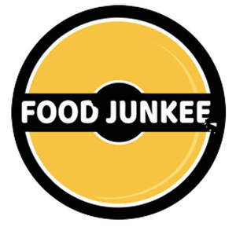
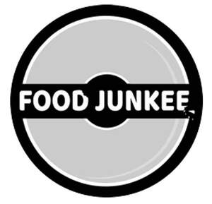

Trade Mark Journal No.2025/050 12 December 2025
UK00004302789 28 November 2025 (29,30,35,43)
Mark 1

Mark 2

- Class 29
- Meat; fish; poultry; game; Meat extracts; Preserved, frozen, dried and cooked fruits and vegetables; Jellies; jams; compotes; Eggs; Milk; milk products; Edible oils and fats; Chicken; Fried chicken; Cooked chicken; Chicken pieces; Burgers; Meat burgers; Chicken burgers; Poultry burgers; Vegetable burgers; Chicken salad; Fruit salads; Salads (Vegetable -); Vegetable salads; Prepared salads; Fish; Processed fish; Onion rings; French fries; Potato fries; Potato chips; Cheese; Processed cheese; Cheese dips; Dips; Hummus; Coleslaw; Beans; Baked beans; Veggie burger patties; Chilled meals made from fish; Prepared meals containing [principally] bacon; Prepared meals containing [principally] chicken; Prepared meals containing [principally] eggs; Cooked meals consisting principally of fish; Prepared meals consisting substantially of seafood; Prepared meals consisting principally of game; Prepared meals consisting primarily of fish; Prepared meals consisting primarily of meat; Prepared meals consisting primarily of vegetables; Prepared meals consisting principally of vegetables; Prepared meals made from fish substitutes; Prepared meals made from seafood substitutes; Prepared meals consisting primarily of kebab; Prepared meals consisting primarily of poultry; Frozen meals consisting primarily of vegetables; Frozen meals consisting primarily of fish; Frozen meals consisting primarily of poultry; Frozen meals consisting primarily of meat; Frozen meals consisting primarily of chicken; Prepared meals consisting primarily of chicken; Prepared meals consisting primarily of duck; Prepared meals consisting primarily of turkey; Frozen prepared meals consisting principally of vegetables; Prepared meals made from poultry [poultry predominating]; Prepared meals made from meat [meat predominating]; Prepared meals consisting primarily of meat substitutes; Ready cooked meals consisting primarily of chicken; Ready cooked meals consisting primarily of meat; Ready cooked meals consisting primarily of poultry; Ready cooked meals consisting primarily of turkey; Prepared meals consisting primarily of soy beans; Ready cooked meals consisting wholly or substantially wholly of game; Ready cooked meals consisting wholly or substantially wholly of meat; Ready cooked meals consisting wholly or substantially wholly of poultry.
- Class 30
- Coffee; tea; cocoa and artificial coffee; Rice; Tapioca and sago; Flour and preparations made from cereals; Bread; pastries; confectionery; Edible ices; Sugar, honey, treacle; Yeast; baking-powder; Salt; Mustard; Vinegar, sauces [condiments]; Spices; Ice; Barbecue sauce; Beverages made of coffee; Beverages made of tea; Beverages with a chocolate base; Biscuits; Bread; Brown sauce; Buns; Burgers contained in bread rolls; Burritos; Cakes; Candy; Cereals; Cheese sauce; Cheeseburgers [sandwiches]; Chicken sandwiches; Chilli sauce; Chocolate bars; Chocolate candies; Chocolate drink preparations; Chocolate flavoured confectionery; Chocolate flavourings; Chocolate spreads; Chocolates; Chutney; Chutneys; Coffee; Concentrated sauce; Condiments in powder form; Condiments; Confectionery; Cooking sauces; Curry mixes; Curry paste; Curry sauces; Food dressings [sauces]; Fruit coulis [sauces]; Fruit sauces; Herb sauces; Horseradish sauce; Hot chocolate; Hot dog sandwiches; Hot dogs (prepared); Hot dogs [sausages in a bread roll]; Hot sauce; Ice confectionery; Ice-cream; Ice, ice creams, frozen yogurts and sorbets; Imitation mayonnaise; Ketchup [sauce]; Marinades containing herbs; Marinades containing seasonings; Marinades containing spices; Marinades; Mayonnaise; Meals consisting primarily of pasta; Meals consisting primarily of rice; Mixed spices; Mixes for making bakery products; Mixes for preparing sauces; Pasta sauce; Pasta; Pastries; Pepper sauces; Pesto [sauce]; Picante sauce; Pies; Pizza sauces; Pizza; Relishes; Salad dressing; Salad sauces; Salsa; Sandwiches containing chicken; Sandwiches containing meat; Satay sauces; Sauce mixes; Sauce powders; Sauces for barbecued meat; Sauces for chicken; Sauces; Savory sauces, chutneys and pastes; Savory sauces; Seasonings; Seasoning marinade; Sorbets; Soy sauce; Syrups and treacles; Tartare sauce; Teas; Teriyaki sauce; Tomato based sauces; Tomato sauce; Vegan mayonnaise; Vegetable pastes [sauces]; Worcestershire sauce; Wraps; Pitta bread; Pitta bread sandwiches; Prepared pizza meals; Rice-based prepared meals; Pasta-based prepared meals; Noodle-based prepared meals; Meals consisting primarily of rice; Meals consisting primarily of pasta; Prepared meals containing [principally] rice; Prepared meals containing [principally] pasta; Prepared meals consisting primarily of rice; Prepared meals consisting primarily of pasta; Frozen meals consisting primarily of pasta; Frozen meals consisting primarily of rice; Prepared meals in the form of pizzas.
- Class 35
- Advertising; Business management; Business administration; Office functions; Administration of loyalty rewards programs featuring trading stamps; Administration of the business affairs of franchises; Advertising services; Advice in the running of establishments as franchises; Advisory services relating to publicity for franchisees; Assistance in business management within the framework of a franchise contract; Assistance in franchised commercial business management; Assistance in product commercialization, within the framework of a franchise contract; Business administration services; Business advertising services relating to franchising; Business advice and consultancy relating to franchising; Business advice relating to franchising; Business advice relating to restaurant franchising; Business advisory services relating to franchising; Business advisory services relating to the establishment and operation of franchises; Business advisory services; Business assistance relating to franchising; Business assistance relating to the establishment of franchises; Business consultancy in relation to franchising; Business consultancy services associated with franchising restaurants, cafes, cafeterias, coffee shops, bars, restaurants, snack bars, catering or other establishment or facilities engaged in providing food or drinks; Business consultancy services associated with operating cafes, cafeterias, coffee shops, bars, restaurants, snack bars, catering or other establishment or facilities engaged in providing food or drinks; Business consultancy services; Business management advisory services relating to franchising; Business management assistance in the field of franchising; Business management assistance in the operation of restaurants; Business management of restaurants; Business operation of cafes, cafeterias, coffee shop, snack bars, catering, restaurants or other establishments or facilities engaged in providing food or drinks prepared for consumption; Dissemination of advertisements; Dissemination of advertising matter online; Dissemination of business information; Dissemination of commercial information; Electronic order processing; Management advisory services related to franchising; Marketing services in the field of restaurants; Marketing services; On-line ordering services in the field of restaurant take-out and delivery; Online advertisements; Online advertising on a computer network; Online ordering services; Ordering services for third parties; Procurement of goods on behalf of other businesses; Promoting the goods and services of others by means of a loyalty rewards card scheme; Providing assistance in the field of business management within the framework of a franchise contract; Providing assistance in the field of product commercialization within the framework of a franchise contract; Providing assistance in the management of franchised businesses; Provision of business advice relating to franchising; Provision of business information relating to franchising; Public relations services; Publicity services; Restaurant management for others; Services rendered by a franchisor, namely, assistance in the running or management of industrial or commercial enterprises; Retail services, wholesale services, mail order or internet retail services in relation to Foods, Beverages, Cutlery, Cardboard packaging, Paper serviettes, Paper bags, Plastic shopping bags, Stationery, Displays, stands and signage, non-metallic, Furniture, Dispensers for serviettes, Drinking straws, Tableware, Earthenware, Cups, Coffee cups, Paper cups, Cardboard cups, Textile serviettes, Clothing, Footwear, Headgear, Meat, fish, poultry and game, Meat extracts, Preserved, frozen, dried and cooked fruits and vegetables, Jellies, jams, compotes, Eggs, Milk and milk products, Edible oils and fats, Meat, fish, poultry, game, Chicken, Fried chicken, Cooked chicken, Chicken pieces, Burgers, Meat burgers, Vegetable burgers, Chicken salad, Fruit salads, Salads (Vegetable -), Vegetable salads, Prepared salads, Fish, Processed fish, Onion rings, French fries, Potato fries, Potato chips, Cheese, Processed cheese, Cheese dips, Dips, Hummus, Coleslaw, Beans, Baked beans, Veggie burger patties, Coffee, tea, cocoa and artificial coffee, Rice, Tapioca and sago, Flour and preparations made from cereals, Bread, pastries and confectionery, Edible ices, Sugar, honey, treacle, Yeast, baking-powder, Salt, Mustard, Vinegar, sauces [condiments], Spices, Ice, Sauces, Barbecue sauce, Horseradish sauce, Ketchup [sauce], Pasta sauce, Cheese sauce, Concentrated sauce, Picante sauce, Tartare sauce, Soy sauce, Chili sauce, Sauce mixes, Pesto [sauce], Brown sauce, Teriyaki sauce, Tomato sauce, Sauce powders, Hot sauce, Worcestershire sauce, Fruit sauces, Cooking sauces, Pizza sauces, Salad sauces, Pepper sauces, Curry sauces, Satay sauces, Savory sauces, Herb sauces, Food dressings [sauces], Vegetable pastes [sauces], Savory sauces, chutneys and pastes, Relishes, Condiments, Salad dressing, Mayonnaise, Imitation mayonnaise, Vegan mayonnaise, Chocolate spreads, Curry paste, Fruit coulis [sauces], Salsa, Chicken sandwiches, Sandwiches containing chicken, Sauces for chicken, Sandwiches containing meat, Sauces for barbecued meat, Marinades, Seasoning marinade, Seasonings, Marinades containing herbs, Marinades containing spices, Marinades containing seasonings, Spices, Burritos, Burgers contained in bread rolls, Buns, Bread, Biscuits, Beverages made of tea, Beverages made of coffee, Beverages with a chocolate base, Cakes, Candy, Cereals, Cheeseburgers [sandwiches], Chocolate flavoured confectionery, Chocolate flavourings, Chocolate drink preparations, Chocolate candies, Chocolate bars, Chocolates, Chutney, Chutneys, Coffee, Confectionery, Curry mixes, Condiments in powder form, Hot dogs (prepared), Hot dog sandwiches, Hot dogs [sausages in a bread roll], Hot chocolate, Ice, Ice confectionery, Ice-cream, Ice, ice creams, frozen yogurts and sorbets, Meals consisting primarily of pasta, Meals consisting primarily of rice, Mixed spices, Mixes for making bakery products, Mixes for preparing sauces, Pasta, Pastries, Pizza, Pies, Rice, Sorbets, Syrups and treacles, Tomato based sauces, Wrap [sandwich], Fish sandwiches, Processed corn, Raw and unprocessed agricultural, aquacultural, horticultural and forestry products, Live animals, Fresh fruits and vegetables, fresh herbs, Natural plants and flowers, Foodstuffs and beverages for animals, Malt, Raw and unprocessed grains and seeds, Bulbs, seedlings and seeds for planting, Garden salads, Fresh fruit, Fresh vegetables, Soft drinks, Juices, Fruit juice, Vegetable juice, Pitta bread, Pitta bread sandwiches, Poultry products, chicken products, fried chicken, fried poultry, grilled chicken, grilled poultry, baked chicken, baked poultry, cooked foods containing chicken, cooked foods containing poultry, snack foods containing chicken, snack foods containing poultry, prepared snacks or meals containing chicken or poultry, Chilled meals made from fish, Prepared meals containing [principally] bacon, Prepared meals containing [principally] chicken, Prepared meals containing [principally] eggs, Cooked meals consisting principally of fish, Prepared meals consisting substantially of seafood, Prepared meals consisting principally of game, Prepared meals consisting primarily of fish, Prepared meals consisting primarily of meat, Prepared meals consisting primarily of vegetables, Prepared meals consisting principally of vegetables, Prepared meals made from fish substitutes, Prepared meals made from seafood substitutes, Prepared meals consisting primarily of kebab, Prepared meals consisting primarily of poultry, Frozen meals consisting primarily of vegetables, Frozen meals consisting primarily of fish, Frozen meals consisting primarily of poultry, Frozen meals consisting primarily of meat, Frozen meals consisting primarily of chicken, Prepared meals consisting primarily of chicken, Prepared meals consisting primarily of duck, Prepared meals consisting primarily of turkey, Frozen prepared meals consisting principally of vegetables, Prepared meals made from poultry [poultry predominating], Prepared meals made from meat [meat predominating], Prepared meals consisting primarily of meat substitutes, Ready cooked meals consisting primarily of chicken, Ready cooked meals consisting primarily of meat, Ready cooked meals consisting primarily of poultry, Ready cooked meals consisting primarily of turkey, Prepared meals consisting primarily of soy beans, Ready cooked meals consisting wholly or substantially wholly of game, Ready cooked meals consisting wholly or substantially wholly of meat, Ready cooked meals consisting wholly or substantially wholly of poultry, Prepared pizza meals, Rice-based prepared meals, Pasta-based prepared meals, Noodle-based prepared meals, Meals consisting primarily of rice, Meals consisting primarily of pasta, Prepared meals containing [principally] rice, Prepared meals containing [principally] pasta, Prepared meals consisting primarily of rice, Prepared meals consisting primarily of pasta, Frozen meals consisting primarily of pasta, Frozen meals consisting primarily of rice, Prepared meals in the form of pizzas; Information, advice or consultancy services relating to the aforesaid.
- Class 43
- Services for providing food and drink; Temporary accommodation; Cafe services; Cafes, cafeterias, take-aways, snack bars, catering, restaurants or other establishments or facilities engaged in providing food or drinks prepared for consumption; Cafeterias; Carry-out restaurants; Catering services; Consultancy services relating to food; Food and drink catering; Food preparation services; Food preparation; Grill restaurants; Provision of food and drink; Restaurant services; Restaurants; Self-service restaurant services; Take-away fast food services; Take-out restaurant services; Takeaway services; Information, advice or consultancy services relating to the aforesaid.
FOOD JUNKEE LTD
Representative: Brand Protect Limited